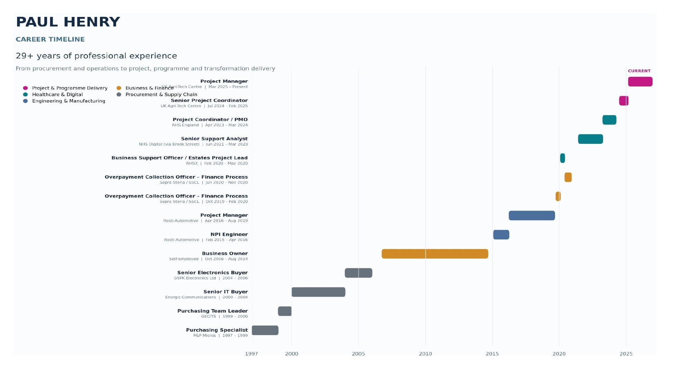

Paul Anthony Henry
Programme Delivery · Business Change & Transformation
Delivery-led professional with experience leading complex projects across government-funded innovation, healthcare digital services and manufacturing. Translates objectives into plans, mobilises multidisciplinary teams, manages budgets and risks, and maintains governance and stakeholder confidence from initiation through close-out.
Leadership & Delivery Impact
Selected highlights from recent and career roles
-
£
Managed projects with £2m–£3m budgets and multidisciplinary teams of 15+ across business, manufacturing and supplier environments.
-
★
Managed large government-funded Innovate UK projects at the UK Agri-Tech Centre alongside commercial and internal initiatives, including financial oversight and external monitoring reporting.
-
◉
Created a Business Portfolio Review reporting framework that improved visibility of status, risks and delivery progress across more than 100 projects.
-
→
Covered Project Manager responsibilities for three months while coaching new Project Coordinators; supported national NHS digital workstreams including Digital Onboarding Service and PDS FHIR.
Core Capabilities
Where I create the most value
Project & Programme Delivery
End-to-end lifecycle, mobilisation and planning, milestones and dependencies, cross-functional delivery, benefits and handover.
Business Change & Transformation
Process improvement, change adoption, service transition, communications and training, operational readiness.
Governance, Risk & Assurance
RAID leadership, change control, governance reporting, project assurance, decision and action tracking, lessons learned.
Commercial & Financial Control
Budget oversight, forecasting, cost control, purchase orders, supplier coordination, resource planning.
Stakeholder & Team Leadership
Senior and external stakeholders, multidisciplinary teams, third-party suppliers, workshops, governance forums.
Methods & Tools
PRINCE2, APM, Agile/Scrum, Waterfall and hybrid delivery · Microsoft Project, Asana, SharePoint, Power BI.
Career Snapshot
29+ years from procurement and operations to project, programme and transformation delivery
